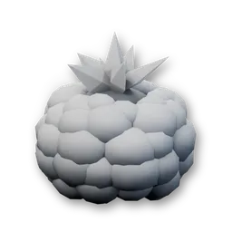
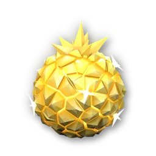

Accueil › Fruits et pouvoirs
Fruits et pouvoirs
Chaque fruit donne un pouvoir et une série d'attaques. On ne peut avoir qu'un pouvoir à la fois.

Fruit de la FuméeCommun Fruit du FeuÉpique
Fruit du FeuÉpique Fruit du MagmaLégendaire
Fruit du MagmaLégendaire Fruit de la GlaceRare
Fruit de la GlaceRare Fruit du SableCommun
Fruit du SableCommun Fruit ÉlastiqueÉpique
Fruit ÉlastiqueÉpique Fruit des TénèbresÉpique
Fruit des TénèbresÉpique
Fruit de la LumièreÉpique| Fruit | Rareté | Prix chez le marchand | V-Bucks | Chance à la roue | Nombre d'attaques |
|---|---|---|---|---|---|
| Fruit de la Fumée | Commun | 5 000 | 100 | 32,5 % | 4 |
| Fruit du Sable | Commun | 5 000 | 100 | 32,5 % | 4 |
| Fruit de la Glace | Rare | 80 000 | 300 | 24 % | 4 |
| Fruit du Feu | Épique | 250 000 | 500 | 5 % | 5 |
| Fruit Élastique | Épique | 250 000 | 500 | 5 % | 6 |
| Fruit de la Lumière | Épique | — | 500 | — | 5 |
| Fruit des Ténèbres | Épique | 350 000 | 500 | — | 5 |
| Fruit du Magma | Légendaire | 600 000 | 800 | 1 % | 5 |